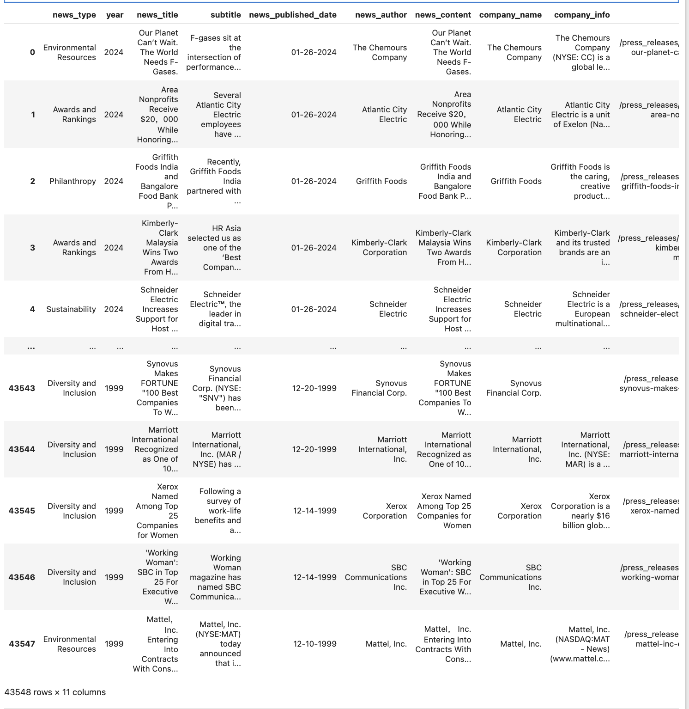

作者: 陈世强, 澳门大学
CSRWire（CSRwire）是一个成立于1999年的数字媒体平台，专注于提供有关企业社会责任（CSR）和可持续性的最新新闻、观点和报告。CSRWire是3BL网络的一部分，致力于帮助组织创建和分享与关键利益相关者（包括投资者、消费者、评级机构、非政府组织等）的可持续性和影响力内容。
一、CSRwire
1.1 数据集概况
数据集: CSRwire
数据源: https://www.csrwire.com/
记录条数: 43391条
所含字段: news_type, year, news_title, subtitle, news_published_date,
news_author, news_content, company_name, company_info, link, image_src
覆盖日期: 1999-12-10 ~ 2024-01-26
覆盖市场: 美股
下载链接: https://pan.baidu.com/s/1Pp4qDMbdPZ-UyXn5cnnYDw?pwd=ayvu
二、实验
2.1 读取数据
import pandas as pd
df = pd.read_stata('CSR_newswire.dta')
#df = pd.read_csv('CSR_newswire.csv.gz')
df['news_published_date'] = pd.to_datetime(df['news_published_date'])
df

2.2 所含字段
for col in df.columns:
print(f' - {col}')
Run
- news_type #分类变量，用于标识新闻的类型或类别
- year #表示新闻发布或报道的年份
- news_title #新闻的标题
- subtitle #新闻的子标题或副标题
- news_published_date #日期变量，记录新闻发布的确切日期
- news_author #字符串变量，包含撰写或发布新闻的作者姓名
- news_content #文本变量，包含新闻的完整内容或正文
- company_name #字符串变量，标识与新闻相关的公司或组织的名称。用于关联新闻与特定公司，便于分析特定公司的新闻报道和公关活动
- company_info #提供关于公司的背景信息，包含关于公司的额外信息，如公司简介、业务范围等。
- link #包含指向新闻原始网页或文章的URL链接。
- image_src #包含新闻配图的URL链接或文件路径。
2.3 覆盖日期
df['news_published_date'] = pd.to_datetime(df['news_published_date'])
print('起: ', df['news_published_date'].min().strftime('%Y-%m-%d'))
print('止: ', df['news_published_date'].max().strftime('%Y-%m-%d'))
Run
起: 1999-12-10
止: 2024-01-26
2.4 新闻类型
df['news_type'].value_counts()
Run
news_type
Philanthropy 8998
Environmental Resources 6732
Sustainability 6363
Employee Engagement 5724
Diversity and Inclusion 3487
Research 2954
Awards and Rankings 2883
Health and Wellness 1971
Finance 1626
Technology 1421
Education 1232
157
Name: count, dtype: int64
三、相关文献
[1]Moss, A., Naughton, J. P., & Wang, C. (2024). The irrelevance of environmental, social, and governance disclosure to retail investors. Management Science, 70(4), 2626-2644.
[2]Assaf, C., Benlemlih, M., El Ouadghiri, I., & Peillex, J. (2023). Does policy uncertainty affect non‐financial disclosure? Evidence from climate change‐related information. International Journal of Finance & Economics.
[3]Anantharaman, D., Gao, F., & Manchiraju, H. (2022). Does social responsibility begin at home? The relation between firms’ pension policies and corporate social responsibility (CSR) activities. Review of Accounting Studies, 27(1), 76-121.
[4]Dang, A., & Nguyen, T. (2021). Valuation effect of emotionality in corporate philanthropy. Journal of Business Ethics, 173, 47-67.
[5]Benlemlih, M., Ge, J., & Zhao, S. (2021). Undervaluation and non‐financial information: Evidence from voluntary disclosure of CSR news. Journal of Business Finance & Accounting, 48(5-6), 785-814.
Cho, S. Y., Kang, P. K., Lee, C., & Park, C. (2020). Financial reporting conservatism and voluntary CSR disclosure. Accounting Horizons, 34(2), 63-82.
[6]Griffin, P. A., & Sun, Y. (2013). Going green: Market reaction to CSRwire news releases. Journal of Accounting and Public Policy, 32(2), 93-113.